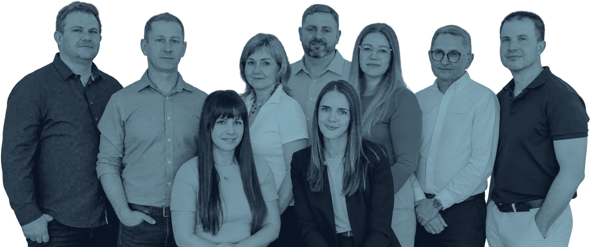

01
Business
Continuity
Hloubková architektura přežití. Zajišťujeme, aby vaše firma fungovala i v případě totálního výpadku kritické infrastruktury.
Prozkoumat metodu →Příběh autority
Vycházíme z odvrácené strany byznysu,
abychom vás udrželi na té vítězné.
Premium Systems není běžná firma. Náš tým tvoří bývalí elitní vyšetřovatelé hospodářské kriminality a forenzní auditoři. Tam, kde jiní vidí procesní chybu, my vidíme vzorec rizika.
Metodiku, kterou jsme léta používali k rozkrývání nejsložitějších finančních podvodů, jsme transformovali do systému preventivní ochrany. Nerozumíme jen IT. Rozumíme psychologii krize a mechanismům selhání.

Naše historie je naší největší zárukou
Pracujeme s fakty, která vzešla z forenzní praxe, nikoliv z učebnic managementu.
Analyzujeme rizika s detektivní precizností. Neřešíme následky, eliminujeme příčiny v samém zárodku.
V momentech, kdy ostatní panikaří, náš tým aktivuje protokoly prověřené v nejnáročnějších krizových operacích.
Váš byznys je vaše životní dílo. Naším úkolem je zajistit, aby pokračovalo bez ohledu na vnější chaos.
Portfolio expertních služeb
Business Continuity je srdcem našeho ekosystému. Kolem něj stavíme specifické vrstvy ochrany, které reagují na aktuální tržní hrozby a legislativní požadavky.
Hloubková architektura přežití. Zajišťujeme, aby vaše firma fungovala i v případě totálního výpadku kritické infrastruktury.
Prozkoumat metodu →Legislativa jako příležitost k opevnění. Převádíme povinné regulace do reálné konkurenční výhody. Bez stresu a pokut.
Prověřit připravenost →Kybernetická bezpečnost, krizový management a ostré testy připravenosti. Služby na míru tam, kde standard nestačí.
Další expertíza →První krok je nezávazné setkání. Je diskrétní a rychle vám ukáže, jestli si budeme rozumět.
Kontakt